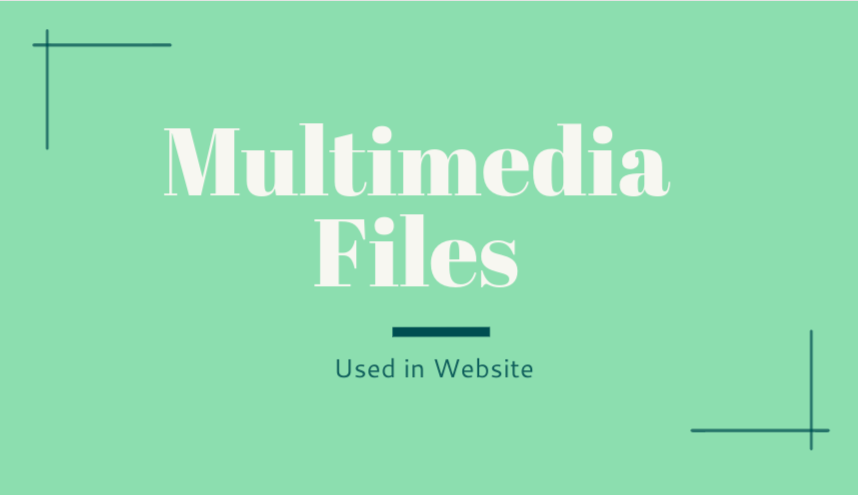

My Blog
Types of Multimedia in Web Design
Multimedia is around all of us from the apps we use, to the videos we watch, and even in the websites we scroll through.
In web design, multimedia refers to the integration of various media types to enhance user experience. Common types include text, images, audio, video, and animations, as well as interactive elements.
These elements can be combined and used in different ways to enhance communication, aesthetics, and overall user engagement on a website.
